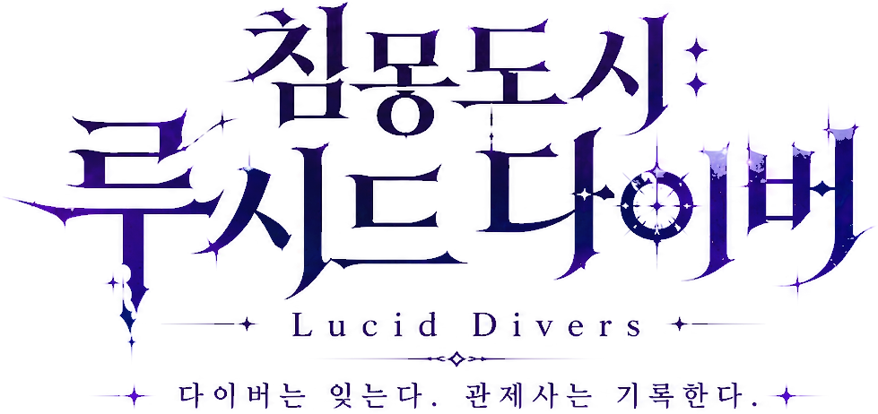
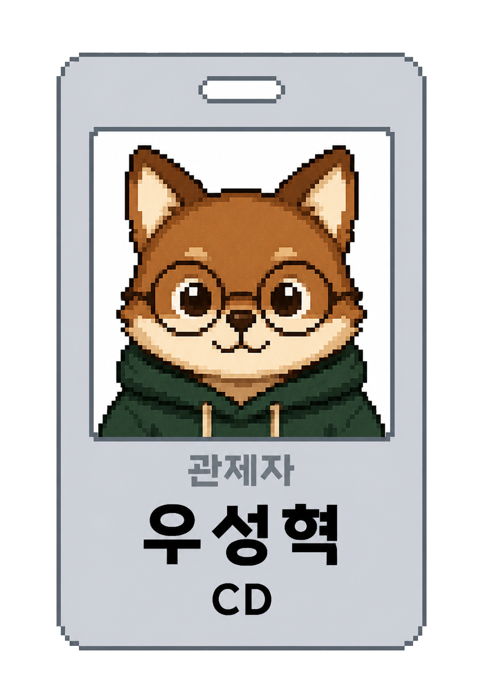
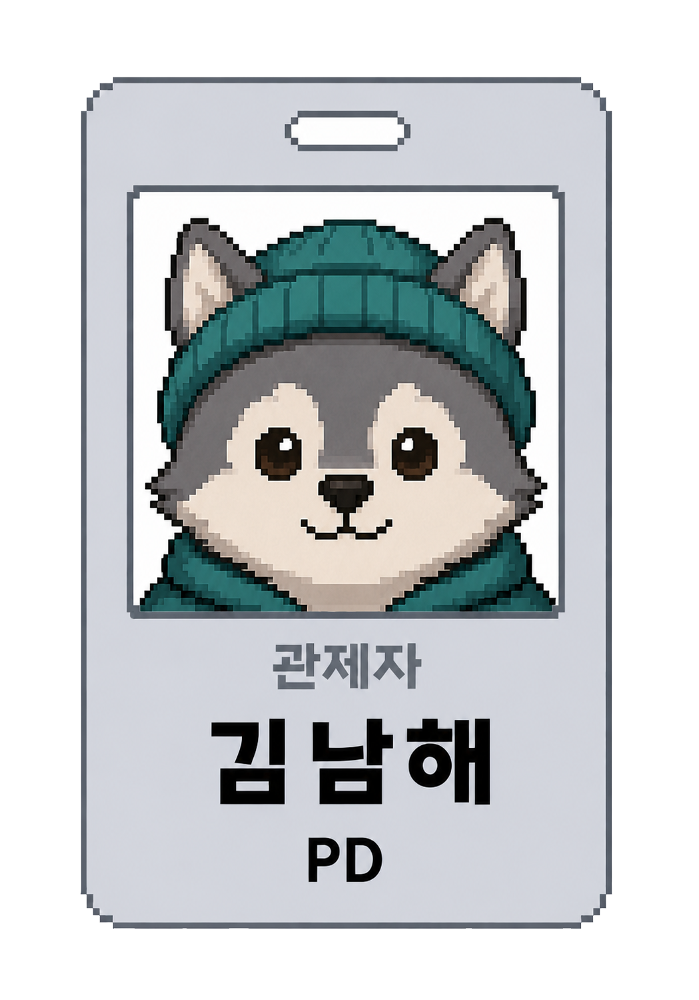

공식 PV 트레일러
침몽도시 NDMA 관제소와 다이버 유안의 자아 복구 스토리
레트로 픽셀 아트 x 3D URP 실시간 공간 광원 연출
58종 오디오 사운드 x AnyPortrait 2D 캐릭터 애니메이션
프로젝트 개요

단순한 전리품 탐색이 아닌 '다이버의 잃어버린 기억과 자아를 되찾는 서사적 루프'를 검증하고자 했습니다.
크루 쇼케이스





디자인 챌린지
캐릭터를 수집하고 육성하는 서브컬처와, 실패하면 모든 것을 잃는 익스트랙션은 물과 기름과 같다.
"잃어야 하는 장르"와 "잃어선 안 되는 장르"를 어떻게 결합할 것인가?
서브컬처 수집형
캐릭터에 깊은 감정적 유대를 가짐.
영구 소실이나 사망 패널티에 극도로 취약함.
익스트랙션
탈출 실패 시 아이템/기억 영구 손실.
손실의 공포에서 비롯되는 극한의 쾌감.
핵심 플레이 루프
01. 출격 준비
소지품 슬롯과 아티팩트를 정비하고 출격을 준비합니다.
세계관 및 설정

UI 기획 및 실제 구현


마우스를 이미지 위에 올리고 움직여서 UI 기획 와이어프레임과 Unity 인게임 화면을 비교해 보세요.
인게임/아웃게임 UI 루프
[로비 / 관제실]
다이버 초상화/스탠딩, 다이버 이름, 현재 동조율 단계 및 성패 귀환 대사가 표시되는 로비 베이스캠프입니다. 출격, 다이버 기록, 창고 메뉴로의 화면 전이를 제공합니다.
[창고 / 인벤토리]
세션 탈출에 성공하여 회수한 소모품(마나석, 회복약)의 수량을 관리하는 보관소입니다. 다음 출격 시 지참하여 세션 내에서 즉시 사용하기 위해 소지품 퀵슬롯 2개에 아이템을 지정하여 장착할 수 있습니다.
[다이버 기록 & 동조율]
정산 단계에서 자동 소모된 기억 파편에 의해 동조율 단계가 상승함에 따라 해금되는 개인 심상 기록을 열람하는 허브입니다. 동조율 단계 변화(Lv.0 → Lv.1)와 기록 01 잠금/해금 상태가 가시화됩니다.
플레이어 제어 시스템
[구현 완료] 2.5D 탑다운 조작 스펙
- 기본 이동: WASD 이동 키 입력 및 마우스 방향 조향 조준 처리
- 물리 충돌 최적화: CapsuleCollider 기반 이동 및 벽면 슬라이딩 충돌 개선
- 광원 연출: Spot Light 2개 방식의 플레이어 손전등 광원 구현 완료
- 소모품 연동: 단지 내 마나석 사용 시 마나 회복, 회복약 사용 시 HP 회복
Diver_DemoScene 인게임 액션 실기 플레이 비디오
에너미 AI 메커니즘
[INTERVIEW] 에너미 담당 크루 피드백 대기
Idle -> Alert -> Chase -> Attack으로 이어지는 적 행동 구조(FSM)와
관제사가 전송하는 적 탐지 범위 오버레이 구현을 설명하는 영역입니다.
- assets/videos/enemy_ai.mp4 (인공지능 감지 시연 비디오)
- assets/images/enemy_fsm.png (적 유닛 행동 다이어그램)
레벨디자인 & 동선
[구현 완료] 40x40 격전지형 맵 스펙
- 레벨 스케일: 개발 최적화를 위해 원본 데모 씬에서 40m x 40m 마켓 맵으로 축소 설계 및 조립
- 비주얼 톤: FlatKit 툰 셰이더 적용 및 Realistic Fog FX 안개 연출 기포 셋업
- 장애물 깊이 투명화: ShaderGraph 기반 카메라 가림 벽 반투명 동적 교체 머티리얼 개발 완료
- 그림자 분리: PlayerShadow 레이어 분리 및 AniPortrait 전용 그림자 복제본 씬 빌드
실제 침몽마트 2.5D 탑다운 레벨 동선 스크린샷
엔지니어링 & 테크 협업
[구현 완료] 테크 아키텍처 및 협업 성과
- 개발 프로세스: Unity Git 레포지토리 구성, Git LFS 및 브랜치 머지 전략 확립
- 데이터 기반 VFX 시스템: 카탈로그 정의를 통한 런타임 풀링 매니저 연동 (송예찬 PM)
- 오디오 시스템: AudioManager 및 IAudioRepository 기반 3D 볼륨 제어 및 수명 관리 (우성혁 CD)
- 결과 정산 아웃게임 연동: 세션 플레이 결과 변수 창고 DB 자동 합산 로직 리팩토링
Unity 아키텍처 다이어그램 및 오디오/VFX 에셋 구조도
QA & 개선 프로세스
[수정 완료] 주요 크리티컬 이슈 해결
- 마우스 이탈 방지: 플레이 중 마우스 커서가 게임 창을 이탈하여 조작이 불능해지던 오류 수정
- 아이템 드래그 & 아티팩트 해제 오류: 결과창 정산 인벤토리 간 드래그 및 탈장착 연동 오작동 버그 수정
- 물리 충돌 개선: 플레이어 이동 시 오브젝트 끼임 현상 최소화를 위한 NavMesh 및 콜라이더 배치 조정
- 튜토리얼 안정 장치: 튜토리얼 씬 내 플레이어 사망 방지(HP=1 고정) 및 강제 이탈 차단 콜라이더 추가
QA 진행 보드 및 해결 티켓 히스토리
결과 및 향후 계획
[차주 과제] 잔여 이월 작업 및 버그 수정
- 가이드 UI 투사 해결: F키 GuideUI World Space Canvas의 worldCamera 누락 해결
- 아이템 설명 리스트업: 임시 차단된 Enum 타입의 한글 매핑 딕셔너리 구축
베타 버전 시연 이후의 차기 스프린트 로드맵
Q&A 세션
01. 기획 & 세계관
서브컬처 다이버 자아 회수 서사와 익스트랙션 사망 손실 구조의 융합 지점
02. URP 그래픽스 & UI/UX
2.5D Cel Shading 외곽선, 세미 픽셀 포스트 프로세싱 & 손전등 부채꼴 시야 마스킹
03. 에너미 AI & 오디오
5단계 모듈형 FSM AI (시야/청각 감지, 차단 이동) & 3D 공간 오디오 연동 수치
04. 코어 인프라 & 시스템
각성 보존 안전 슬롯, 창고/인벤토리 데이터 파이프라인 & VFX 오브젝트 풀링
자유롭게 질문해주세요
담당 크루 관제사가 질의 항목에 맞춰
기술 및 기획적 판단 사유를 성실히 답변드립니다.
경청해 주셔서 감사합니다 — Team REMnants
본 최종 발표 웹페이지와 P1 프로토타입 빌드 및 문서들은 아래 공개 저장소를 통해 언제든 확인하실 수 있습니다.